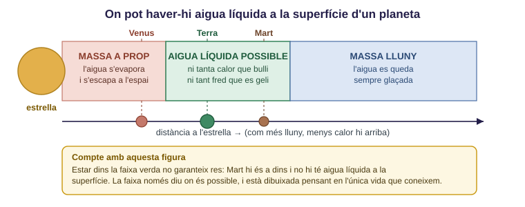
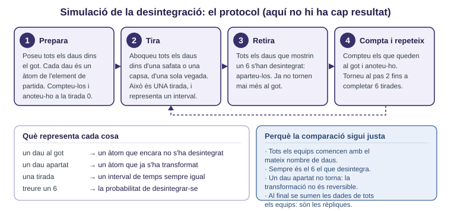
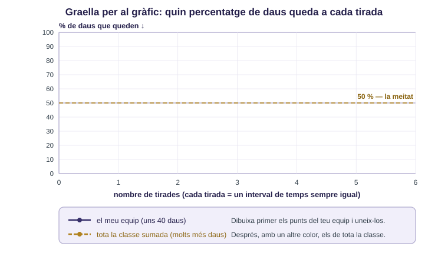
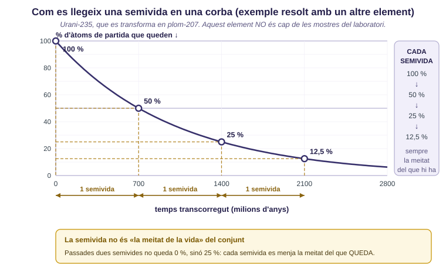
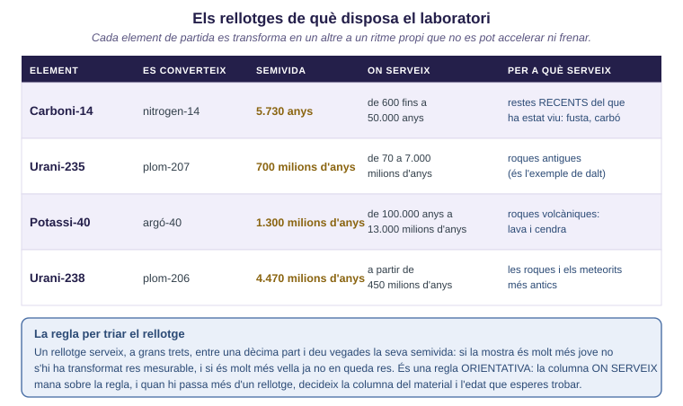
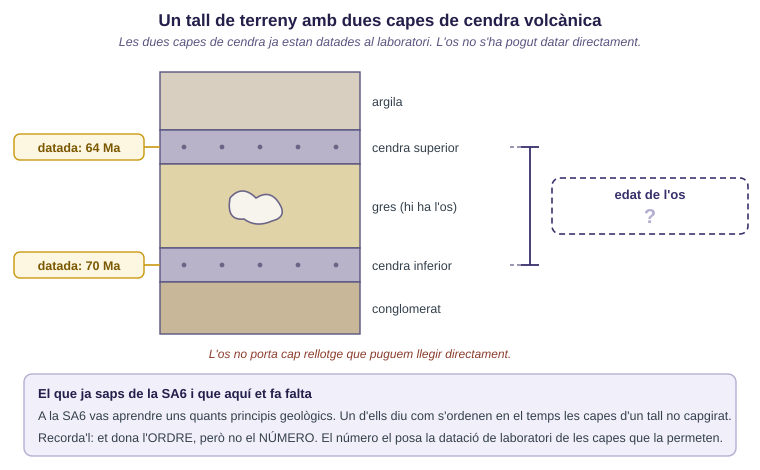

Tens una pedra a la mà. Quina propietat hauria de tenir a dins perquè, mesurant-la, en poguessis deduir l'edat en anys? I creus que es pot saber l'edat exacta d'un os de dinosaure? Per què?

Fig.1 · La faixa verda diu on l'aigua líquida és possible.
1a. Escriu tres condicions que ha de complir un planeta perquè hi pugui haver aigua líquida a la superfície i, per a cadascuna, què passaria si faltessin. La figura te'n dona una: les altres dues les has de raonar tu. Dues preguntes que t'hi porten: què passa amb els gasos d'un planeta molt petit, i què hi ha a l'espai que pugui anar arrencant una atmosfera?
| Condició | Què passaria si faltés |
|---|---|
1b. Mart és un contraexemple de la faixa, o més aviat una prova que la faixa és una condició necessària però no suficient? Argumenta-ho.
1c. (si et queda temps) Dibuixar aquesta faixa és extrapolar: allargar una conclusió més enllà dels casos observats. Què estem donant per suposat en fer-ho, i quina mena de vida quedaria fora del que la faixa pot predir?
🔧 Material: un got amb uns 40 daus i una safata o capsa. Alternativa amb monedes (es desintegra el que surti creu): la corba baixa molt més de pressa i amb 3 o 4 tirades n'hi ha prou.

Fig.2 · El protocol. Cap resultat: els números els genereu vosaltres.
2a. Abans de tirar cap dau, escriu una predicció amb un número i el raonament que t'hi porta: quantes tirades caldran perquè en quedi la meitat?
2b. Anota les dades i passa-les a percentatge. La columna de la classe s'omple al final.
| Tirada | Daus que queden (equip) | % que queda (equip) | % que queda (classe) |
|---|---|---|---|
| 0 | 100 % | 100 % | |
| 1 | |||
| 2 | |||
| 3 | |||
| 4 | |||
| 5 | |||
| 6 |
2c. Dibuixa les dues corbes a la graella, amb colors diferents.

Fig.3 · La línia del 50 % és la que et deixa llegir la semivida.
2d. Quantes tirades han calgut perquè en quedés la meitat? Com ho has llegit al gràfic, i quina incertesa té aquesta lectura?
2e. Explica aquesta paradòxa. Quin paper hi fan les rèpliques: corregeixen un error de mesura o fan una altra cosa?
2f. (si et queda temps) Aquest model prediu quin dau concret sortirà a la propera tirada? Digues què pot predir i què no, i tradueix-ho al cas dels àtoms d'una roca.

Fig.4 · Exemple resolt amb urani-235, que no és cap de les mostres de l'apartat 4.
3a. Practica amb un element inventat de semivida 40 anys. Les dues últimes files no surten a la figura: les has de continuar tu.
| Situació | Quantes semivides | Quants anys / quin % queda |
|---|---|---|
| queda el 12,5 % | ||
| queda el 3,125 % | ||
| han passat 140 anys no cau en cap semivida sencera: acota-ho |
3b. Quina informació dona la datació relativa que l'absoluta no pot donar, i a l'inrevés? Posa un cas on la relativa n'hi hagi prou i un altre on no en tingui de cap manera.
3c. Què hauria de passar-li a una roca perquè el rellotge donés una edat falsa? Proposa una manera com un laboratori podria detectar-ho.

Fig.5 · Les dades. La regla del requadre blau decideix quin rellotge pots fer servir.
4a. Omple l'informe. La columna de la dreta és obligatòria: un informe que només dona números està incomplet. Si més d'un rellotge compleix la regla dels anys, mana la columna del material i l'edat que esperes trobar. Una de les mostres no es pot datar directament: dir-ho i justificar-ho és la resposta correcta.
| Mostra | Rellotge i per què | Semivides | Edat | Què NO puc afirmar amb aquesta dada |
|---|---|---|---|---|
| A. Fragment de meteorit. Es vol comprovar si és tan antic com el sistema solar. Hi queda el 50 % de l'element de partida. | ||||
| B. Carbó d'una foguera en una cova. Hi queda el 25 % de l'element de partida. | ||||
| C. Os de dinosaure (fa uns 66 Ma), d'un tall de terreny que veuràs a 4b. Un company proposa el carboni-14. | ||||
| D. Roca volcànica del terreny més antic conegut de Groenlàndia. Hi queda el 12,5 % del potassi-40. |

Fig.6 · Les dues cendres estan datades. L'os, no.
4b. Escriu el paràgraf de l'informe que enviaries al client sobre la mostra C: què s'ha datat realment, quin interval en resulta, per quin principi geològic, i per què el resultat és un interval i no un número.
4c. Amb aquestes proves, podem afirmar que la vida va aparèixer fa 3.500 Ma, o només que en aquell moment ja n'hi havia? Explica la diferència i digues quin paper hi fa el fet que gairebé no s'hagin conservat roques anteriors. I encara una altra, més difícil: podríem arribar a saber si la vida hi va aparèixer un sol cop? Quina prova faria falta?